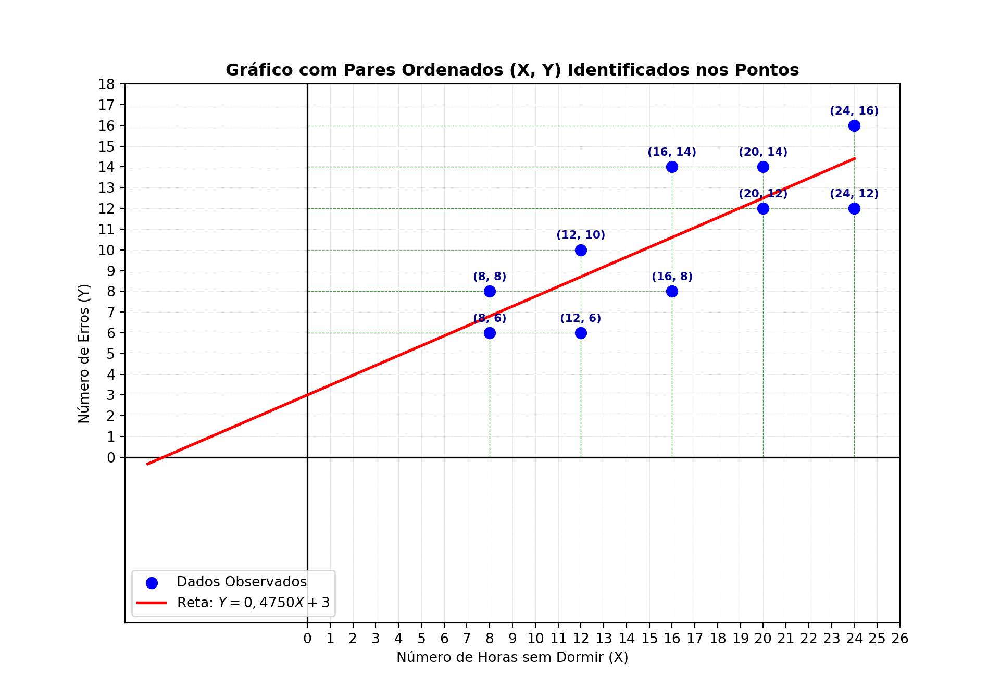

- Exercícios - Coleta de Dados e Regressão Linear
Exemplo 01 -
Uma pesquisa foi realizada com o objetivo de verificar se existe
associação entre a falta de sono e a capacidade de as pessoas resolverem
problemas simples. Foram testadas 10 pessoas, mantendo-se sem dormir por
um determinado número de horas. Após cada um destes períodos, cada
pessoa teve de resolver um teste com adições simples, anotando-se então
os erros cometidos. Os dados resultantes são os seguintes:
| 1 |
8 |
6 |
| 2 |
8 |
8 |
| 3 |
12 |
6 |
| 4 |
12 |
10 |
| 5 |
16 |
8 |
| 6 |
16 |
14 |
| 7 |
20 |
12 |
| 8 |
20 |
14 |
| 9 |
24 |
12 |
| 10 |
24 |
16 |
- Calcule o coeficiente de correlação linear de
Pearson, interprete e teste sua significância a
5%.
- Ajuste, teste e interprete o modelo de regressão
linear simples.
No python Comece importando os cabeçalhos: - importe a biblioteca
numpy para criar vetores de valores - importe a
biblioteca stats para usar as funções para
linregress para calcular a regressão linear - importe a
biblioteca stats para usar as funções para
pearsonr para calcular o coeficiente de correlação
r
import numpy as np
from scipy import stats
from yt_dlp.extractor import agora
Agora precisamos criar uma função para calcular a regressão
linear
def calcular_regressao_linear(x: np.ndarray, y: np.ndarray) -> tuple[float, float, float]:
"""Calcula os parâmetros e o teste de significância da regressão linear simples."""
print("--- b) Modelo de Regressão Linear Simples ---")
# Ajustando a reta de regressão e obtendo estatísticas completas
inclinacao_reta, interceptacao, correlacao_r, valor_p, erro_padrao = stats.linregress(x, y)
print(f"Coeficiente Angular ( m ): {inclinacao_reta:.4f}")
print(f"Intercepto ( n ): {interceptacao:.4f}")
print(f"Equação ajustada: Y_hat = {interceptacao:.4f} + {inclinacao_reta:.4f} * X")
print(f"P-valor do coeficiente angular (teste do modelo): {valor_p:.5f}")
if ( valor_p < 0.05):
print("Conclusão: O modelo de regressão linear é estatisticamente significativo a 5%.")
else:
print("Conclusão: O modelo não é estatisticamente significativo.")
return interceptacao, inclinacao_reta, valor_p
Agora precisamos criar uma função para calcular o coeficiente
de correlação r
def calcular_correlacao_pearson(v_independentes_x: np.ndarray, v_dependentes_y: np.ndarray) -> tuple[float, float]:
"""Calcula o coeficiente de correlação de Pearson e o p-valor correspondente."""
print("--- a) Coeficiente de Correlação de Pearson e Teste ---")
coeficiente_de_correlacao_r, valor_de_p = stats.pearsonr(v_independentes_x, v_dependentes_y)
print(f"Coeficiente de Correlação (r): {coeficiente_de_correlacao_r:.4f}")
print(f"P-valor da correlação: {valor_de_p:.5f}")
if ( valor_de_p < 0.05):
print("Conclusão: Rejeitamos a Hipótese. A correlação é estatisticamente relevante a 5%.\n")
else:
print("Conclusão: Não rejeitamos a Hipótese.\n")
return coeficiente_de_correlacao_r, valor_de_p
Agora vamos definir a ordem de execução das funções:
def funcao_principal() -> None:
# Carregar os valores de X (que é a variável independente) no vetor variaveis_independentes_x
# X: Número de horas sem dormir
variaveis_independentes_x = np.array([8, 8, 12, 12, 16, 16, 20, 20, 24, 24])
# # Carregar os valores de Y (que é a variável independente) no vetor variaveis_dependentes_y
# Y: Número de erros
variaveis_dependentes_y = np.array([6, 8, 6, 10, 8, 14, 12, 14, 12, 16])
# Executando a correlação
calcular_correlacao_pearson(variaveis_independentes_x, variaveis_dependentes_y)
# Executando a regressão linear
calcular_regressao_linear(variaveis_independentes_x, variaveis_dependentes_y)
Finalmente, vamos iniciar o fluxo principal do
programa, chamado a funcao_principal() que chamará
todas as outras na ordem
if __name__ == '__main__':
funcao_principal()
## --- a) Coeficiente de Correlação de Pearson e Teste ---
## Coeficiente de Correlação (r): 0.8015
## P-valor da correlação: 0.00531
## Conclusão: Rejeitamos a Hipótese. A correlação é estatisticamente relevante a 5%.
##
## --- b) Modelo de Regressão Linear Simples ---
## Coeficiente Angular ( m ): 0.4750
## Intercepto ( n ): 3.0000
## Equação ajustada: Y_hat = 3.0000 + 0.4750 * X
## P-valor do coeficiente angular (teste do modelo): 0.00531
## Conclusão: O modelo de regressão linear é estatisticamente significativo a 5%.
Como ficou a equação descoberta pela regressão linear
simples ?
Uma equação de reta segue o formato \(y =
mx + n\).
\[
y = \underbrace{m}*{*\text{coeficiente angular}} x +
\underbrace{n}{\text{coeficiente linear}}
\]
No exercício: - o valor de m é dado pelo valor do
coeficiente angular ; - o valor de n é dado
pelo valor do intercepto ;
Então a equação ficou:
\[
y = 0,4750(x) + 3
\]
Gráfico do Exemplo 00
import numpy as np
import matplotlib.pyplot as plt
# Dados do problema
x = np.array([8, 8, 12, 12, 16, 16, 20, 20, 24, 24])
y = np.array([6, 8, 6, 10, 8, 14, 12, 14, 12, 16])
# Configuração do gráfico
plt.figure(figsize=(10, 7))
# Definindo os limites dos eixos começando em 0
plt.xlim(-8, max(x) + 2)
## (-8.0, 26.0)
## (-8.0, 18.0)
# Configurando a escala unitária (passo de 1 em 1) para os eixos X e Y
plt.xticks(np.arange(0, max(x) + 3, 1))
## ([<matplotlib.axis.XTick object at 0x00000142F124FC50>, <matplotlib.axis.XTick object at 0x00000142F12F2420>, <matplotlib.axis.XTick object at 0x00000142F12BFF80>, <matplotlib.axis.XTick object at 0x00000142F135DC40>, <matplotlib.axis.XTick object at 0x00000142F12BD100>, <matplotlib.axis.XTick object at 0x00000142F135CB60>, <matplotlib.axis.XTick object at 0x00000142F135E600>, <matplotlib.axis.XTick object at 0x00000142F135F230>, <matplotlib.axis.XTick object at 0x00000142F135FD40>, <matplotlib.axis.XTick object at 0x00000142F135E8A0>, <matplotlib.axis.XTick object at 0x00000142F1365580>, <matplotlib.axis.XTick object at 0x00000142F1367DD0>, <matplotlib.axis.XTick object at 0x00000142F1368710>, <matplotlib.axis.XTick object at 0x00000142F13692B0>, <matplotlib.axis.XTick object at 0x00000142F12F28A0>, <matplotlib.axis.XTick object at 0x00000142F1369DC0>, <matplotlib.axis.XTick object at 0x00000142F136A810>, <matplotlib.axis.XTick object at 0x00000142F136B320>, <matplotlib.axis.XTick object at 0x00000142F136B9E0>, <matplotlib.axis.XTick object at 0x00000142F136AB10>, <matplotlib.axis.XTick object at 0x00000142F1374C20>, <matplotlib.axis.XTick object at 0x00000142F1375280>, <matplotlib.axis.XTick object at 0x00000142F1464260>, <matplotlib.axis.XTick object at 0x00000142F1464E00>, <matplotlib.axis.XTick object at 0x00000142F1374800>, <matplotlib.axis.XTick object at 0x00000142F1465880>, <matplotlib.axis.XTick object at 0x00000142F1468980>], [Text(0, 0, '0'), Text(1, 0, '1'), Text(2, 0, '2'), Text(3, 0, '3'), Text(4, 0, '4'), Text(5, 0, '5'), Text(6, 0, '6'), Text(7, 0, '7'), Text(8, 0, '8'), Text(9, 0, '9'), Text(10, 0, '10'), Text(11, 0, '11'), Text(12, 0, '12'), Text(13, 0, '13'), Text(14, 0, '14'), Text(15, 0, '15'), Text(16, 0, '16'), Text(17, 0, '17'), Text(18, 0, '18'), Text(19, 0, '19'), Text(20, 0, '20'), Text(21, 0, '21'), Text(22, 0, '22'), Text(23, 0, '23'), Text(24, 0, '24'), Text(25, 0, '25'), Text(26, 0, '26')])
plt.yticks(np.arange(0, max(y) + 3, 1))
## ([<matplotlib.axis.YTick object at 0x00000142F124FDD0>, <matplotlib.axis.YTick object at 0x00000142F12F0FB0>, <matplotlib.axis.YTick object at 0x00000142F12F12E0>, <matplotlib.axis.YTick object at 0x00000142F1469DC0>, <matplotlib.axis.YTick object at 0x00000142F146B410>, <matplotlib.axis.YTick object at 0x00000142F146BE90>, <matplotlib.axis.YTick object at 0x00000142F146C8C0>, <matplotlib.axis.YTick object at 0x00000142F146A8A0>, <matplotlib.axis.YTick object at 0x00000142F135DFD0>, <matplotlib.axis.YTick object at 0x00000142F146D250>, <matplotlib.axis.YTick object at 0x00000142F146DD00>, <matplotlib.axis.YTick object at 0x00000142F146E7E0>, <matplotlib.axis.YTick object at 0x00000142F146ADE0>, <matplotlib.axis.YTick object at 0x00000142F146F260>, <matplotlib.axis.YTick object at 0x00000142F146FC80>, <matplotlib.axis.YTick object at 0x00000142F14706E0>, <matplotlib.axis.YTick object at 0x00000142F1471310>, <matplotlib.axis.YTick object at 0x00000142F136AFC0>, <matplotlib.axis.YTick object at 0x00000142F1471D30>], [Text(0, 0, '0'), Text(0, 1, '1'), Text(0, 2, '2'), Text(0, 3, '3'), Text(0, 4, '4'), Text(0, 5, '5'), Text(0, 6, '6'), Text(0, 7, '7'), Text(0, 8, '8'), Text(0, 9, '9'), Text(0, 10, '10'), Text(0, 11, '11'), Text(0, 12, '12'), Text(0, 13, '13'), Text(0, 14, '14'), Text(0, 15, '15'), Text(0, 16, '16'), Text(0, 17, '17'), Text(0, 18, '18')])
# Grade padrão em cinza claro para a escala geral
for xtick in np.arange(0, max(x) + 3, 1):
plt.axvline(xtick, color='gray', linewidth=0.3, linestyle=':', alpha=0.5, zorder=1)
for ytick in np.arange(0, max(y) + 3, 1):
plt.axhline(ytick, color='gray', linewidth=0.3, linestyle=':', alpha=0.5, zorder=1)
# Projetando linhas vermelhas contínuas sobre os pares ordenados formados pelos vetores x e y
for xi, yi in zip(x, y):
plt.vlines(xi, 0, yi, color='green', linewidth=0.5, linestyle='--', alpha=0.5, zorder=2)
plt.hlines(yi, 0, xi, color='green', linewidth=0.5, linestyle='--', alpha=0.5, zorder=2)
# Destacando os eixos principais em (0,0)
plt.axhline(0, color='black', linewidth=1.2, zorder=3)
plt.axvline(0, color='black', linewidth=1.2, zorder=3)
# Gráfico de dispersão (pontos observados)
plt.scatter(x, y, color='blue', label='Dados Observados', s=60, zorder=5)
# Adicionando rótulos com os pares ordenados (X, Y) em cada ponto
for xi, yi in zip(x, y):
plt.annotate(f"({xi}, {yi})",
(xi, yi),
textcoords="offset points",
xytext=(0, 8), # Deslocamento vertical do texto em relação ao ponto
ha='center',
fontsize=8,
fontweight='bold',
color='darkblue',
zorder=6)
# Definindo os pontos para a reta y = 0.4750 * x + 3
x_linha = np.linspace(-7, max(x), 100)
y_linha = 0.4750 * x_linha + 3
# Plotando a reta de regressão
plt.plot(x_linha, y_linha, color='red', linestyle='-', linewidth=2, label='Reta: $Y = 0,4750X + 3$', zorder=4)
# Rótulos e formatação
plt.title('Gráfico com Pares Ordenados (X, Y) Identificados nos Pontos', fontsize=12, fontweight='bold')
plt.xlabel('Número de Horas sem Dormir (X)', fontsize=10)
plt.ylabel('Número de Erros (Y)', fontsize=10)
plt.legend()
# Exibir o gráfico
plt.show()

Testes de Multipla-Escolha: